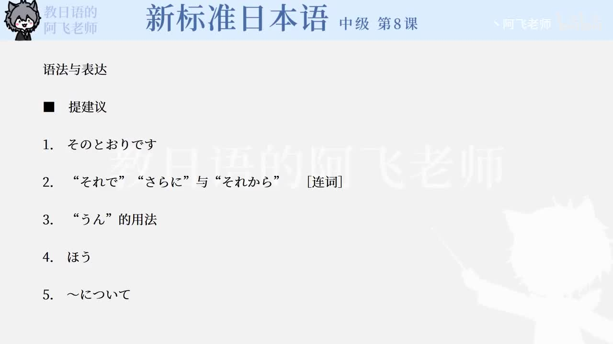

Bilibili P140 · Dialogue Reading
企画書
围绕“金星”中国市场推广策划书，学习如何依据前情提出目标定位、设计宣传渠道、设置网页栏目，并用商务表达推进取材行动。
全篇听力精讲
按 14 句会话轮播。每句依次播放日语原句、中文翻译、结构说明、词块提醒和语法要点。
这段会话在做什么
依据前情王先确认“金星”在年轻人中受欢迎，把提案建立在前次信息上。
提出策划目标客群、宣传渠道、活动形式、主页栏目一步步展开。
转入执行佐藤把网页栏目变成实际取材任务，王再提出先和上司确认。
会话推进链
1 · 确认前提先日の話では
2 · 提出目标ターゲットを絞る
3 · 展开手段CM・ホームページ・イベント
4 · 执行取材上司と相談させてください
逐句精读
重点语法与表达
课文词汇与固定搭配
练习与复习
来源说明：视频标题、时长、CID 和首帧来自 Bilibili 公开视频接口；课文原文来自本地《新标准日本语》中级第8课教材数据，并修正少量明显录入误差用于学习。